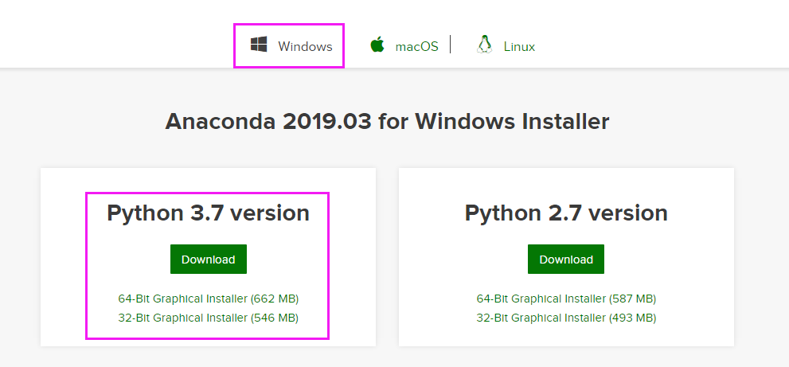
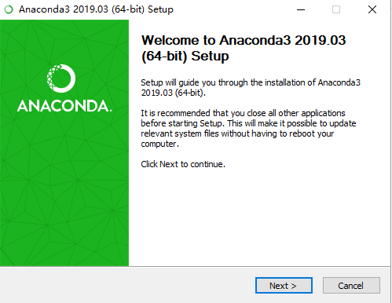
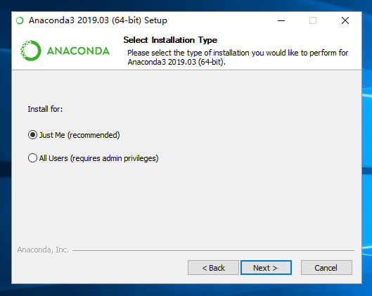
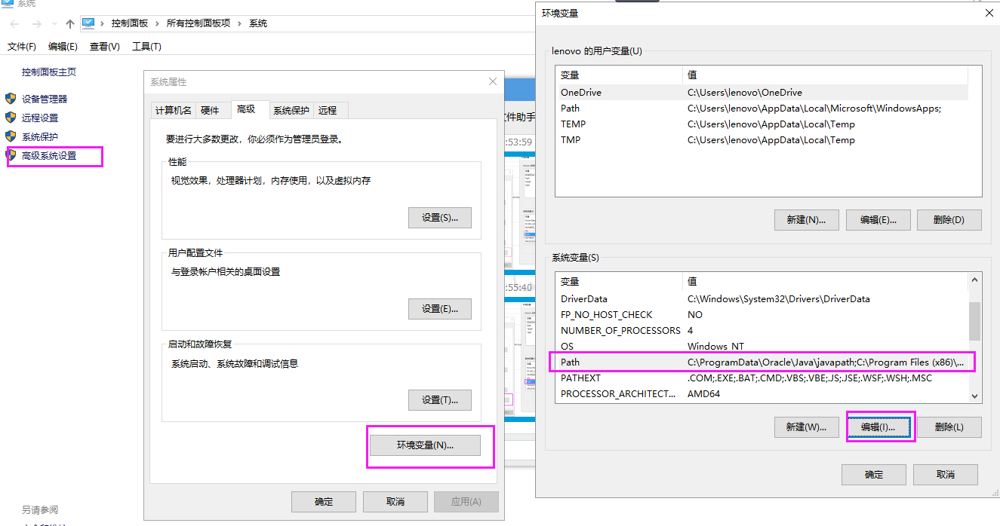

2.2 安装python¶
1. 在http://www.anaconda.com下载windows版的Anaconda安装包。
下载完成后，鼠标双击启动安装程序，保留默认选项设置，按照指示步骤安装。只有以管理员身份才可选择所有用户安装，一般情况下勾选“Just Me”即可。
 
- 2. 安装完成之后需要添加环境变量。
鼠标右击桌面上的此电脑图标，在弹出的右键菜单中点击属性，打开系统设置。依次选择高级系统设置-环境变量-path系统变量-编辑，打开编辑环境变量的对话框之后，点击新建，添加下图所示环境变量，方框里的路径需要对应自己的安装目录，如下图所示。
- 3. 给conda和pip添加清华源镜像，具体方法参考：
conda 清华镜像：https://mirror.tuna.tsinghua.edu.cn/help/anaconda/ pypi清华镜像：https://mirror.tuna.tsinghua.edu.cn/help/pypi/ 注意：如果不添加清华镜像源，会有一个依赖包fastTSNE-0.2.13.tar.gz无法正确下载，可以手动通过连接下载0.2.13版本并通过pip安装https://pypi.tuna.tsinghua.edu.cn/simple/fasttsne/